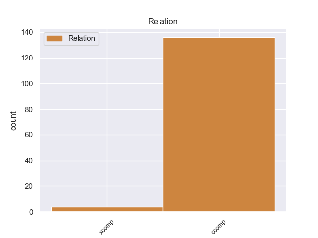
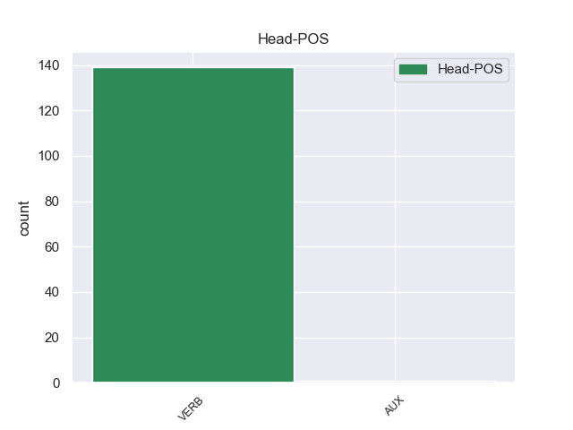
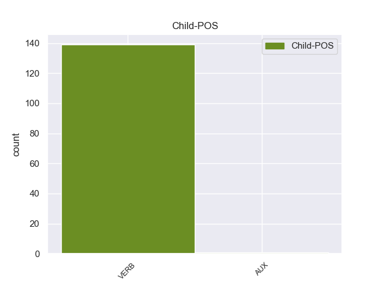

Distribution of features within this leaf



Agreement Rules sorted by frequency.
- When the dependent token is the clausal complement(ccomp) of the head token,
1 από _ _ _ _ 0 _ _ _
2 τα _ _ _ _ 0 _ _ _
3 δε _ _ _ _ 0 _ _ _
4 έγγραφα _ _ _ _ 0 _ _ _
5 της _ _ _ _ 0 _ _ _
6 υπόθεσης _ _ _ _ 0 _ _ _
7 προκύπτει προκύπτειr VERB _ Mood=Ind|Number=Sing|Person=3|Tense=Pres|VerbForm=Fin 0 _ _ _
8 ότι _ _ _ _ 0 _ _ _
9 δεν _ _ _ _ 0 _ _ _
10 φαίνεται φαίνεταιr VERB _ Mood=Ind|Number=Sing|Person=3|Tense=Pres|VerbForm=Fin 7 ccomp _ _
11 να _ _ _ _ 0 _ _ _
12 έχει _ _ _ _ 0 _ _ _
13 ληφθεί _ _ _ _ 0 _ _ _
14 υπόψη _ _ _ _ 0 _ _ _
15 η _ _ _ _ 0 _ _ _
16 σύσταση _ _ _ _ 0 _ _ _
17 να _ _ _ _ 0 _ _ _
18 διαβιβαστεί _ _ _ _ 0 _ _ _
19 η _ _ _ _ 0 _ _ _
20 αίτηση _ _ _ _ 0 _ _ _
21 άρσης _ _ _ _ 0 _ _ _
22 της _ _ _ _ 0 _ _ _
23 ασυλίας _ _ _ _ 0 _ _ _
24 μόνον _ _ _ _ 0 _ _ _
25 επί _ _ _ _ 0 _ _ _
26 τη _ _ _ _ 0 _ _ _
27 βάσει _ _ _ _ 0 _ _ _
28 ακριβέστερου _ _ _ _ 0 _ _ _
29 προσδιορισμού _ _ _ _ 0 _ _ _
30 όσον _ _ _ _ 0 _ _ _
31 αφορά _ _ _ _ 0 _ _ _
32 τους _ _ _ _ 0 _ _ _
33 τόπους _ _ _ _ 0 _ _ _
34 και _ _ _ _ 0 _ _ _
35 τα _ _ _ _ 0 _ _ _
36 πρόσωπα _ _ _ _ 0 _ _ _
37 που _ _ _ _ 0 _ _ _
38 εμπλέκονται _ _ _ _ 0 _ _ _
39 σ _ _ _ _ 0 _ _ _
40 την _ _ _ _ 0 _ _ _
41 υπόθεση _ _ _ _ 0 _ _ _
42 . _ _ _ _ 0 _ _ _
Disagree Examples:
1 En _ _ _ _ 0 _ _ _
2 997 _ _ _ _ 0 _ _ _
3 murió _ _ _ _ 0 _ _ _
4 el _ _ _ _ 0 _ _ _
5 emir _ _ _ _ 0 _ _ _
6 buyida _ _ _ _ 0 _ _ _
7 Fajar _ _ _ _ 0 _ _ _
8 ad _ _ _ _ 0 _ _ _
9 - _ _ _ _ 0 _ _ _
10 Dawla _ _ _ _ 0 _ _ _
11 Ali _ _ _ _ 0 _ _ _
12 , _ _ _ _ 0 _ _ _
13 lo _ _ _ _ 0 _ _ _
14 que _ _ _ _ 0 _ _ _
15 permitió permitir VERB _ Mood=Ind|Number=Sing|Person=3|Tense=Past|VerbForm=Fin 0 _ _ _
16 a _ _ _ _ 0 _ _ _
17 Baha _ _ _ _ 0 _ _ _
18 ad _ _ _ _ 0 _ _ _
19 - _ _ _ _ 0 _ _ _
20 Dawla _ _ _ _ 0 _ _ _
21 Firuz _ _ _ _ 0 _ _ _
22 reforzar reforzar VERB _ Mood=Ind|Number=Sing|Person=3|Tense=Pres|VerbForm=Fin 15 xcomp _ _
23 su _ _ _ _ 0 _ _ _
24 posición _ _ _ _ 0 _ _ _
25 en _ _ _ _ 0 _ _ _
26 Fars _ _ _ _ 0 _ _ _
27 . _ _ _ _ 0 _ _ _
1 El _ _ _ _ 0 _ _ _
2 Lyon _ _ _ _ 0 _ _ _
3 ha _ _ _ _ 0 _ _ _
4 asumido _ _ _ _ 0 _ _ _
5 la _ _ _ _ 0 _ _ _
6 marcha _ _ _ _ 0 _ _ _
7 de _ _ _ _ 0 _ _ _
8 uno _ _ _ _ 0 _ _ _
9 de _ _ _ _ 0 _ _ _
10 sus _ _ _ _ 0 _ _ _
11 jugadores _ _ _ _ 0 _ _ _
12 a _ _ _ _ 0 _ _ _
13 el _ _ _ _ 0 _ _ _
14 Málaga _ _ _ _ 0 _ _ _
15 que _ _ _ _ 0 _ _ _
16 es ser VERB _ Mood=Ind|Number=Sing|Person=3|Tense=Pres|VerbForm=Fin 0 _ _ _
17 quien _ _ _ _ 0 _ _ _
18 acometerá acometer VERB _ Mood=Ind|Number=Sing|Person=3|Tense=Fut|VerbForm=Fin 16 xcomp _ _
19 el _ _ _ _ 0 _ _ _
20 fichaje _ _ _ _ 0 _ _ _
21 de _ _ _ _ 0 _ _ _
22 Toulalan _ _ _ _ 0 _ _ _
23 , _ _ _ _ 0 _ _ _
24 un _ _ _ _ 0 _ _ _
25 jugador _ _ _ _ 0 _ _ _
26 que _ _ _ _ 0 _ _ _
27 seguramente _ _ _ _ 0 _ _ _
28 saldrá _ _ _ _ 0 _ _ _
29 rumbo _ _ _ _ 0 _ _ _
30 a _ _ _ _ 0 _ _ _
31 España _ _ _ _ 0 _ _ _
32 a _ _ _ _ 0 _ _ _
33 jugar _ _ _ _ 0 _ _ _
34 la _ _ _ _ 0 _ _ _
35 Liga _ _ _ _ 0 _ _ _
36 BBVA _ _ _ _ 0 _ _ _
37 . _ _ _ _ 0 _ _ _
1 Un _ _ _ _ 0 _ _ _
2 informante _ _ _ _ 0 _ _ _
3 dijo _ _ _ _ 0 _ _ _
4 más _ _ _ _ 0 _ _ _
5 tarde _ _ _ _ 0 _ _ _
6 que _ _ _ _ 0 _ _ _
7 la _ _ _ _ 0 _ _ _
8 mafia _ _ _ _ 0 _ _ _
9 toleró _ _ _ _ 0 _ _ _
10 el _ _ _ _ 0 _ _ _
11 Maxi _ _ _ _ 0 _ _ _
12 Proceso _ _ _ _ 0 _ _ _
13 porque _ _ _ _ 0 _ _ _
14 asumían asumir VERB _ Mood=Ind|Number=Plur|Person=3|Tense=Imp|VerbForm=Fin 0 _ _ _
15 que _ _ _ _ 0 _ _ _
16 los _ _ _ _ 0 _ _ _
17 condenados _ _ _ _ 0 _ _ _
18 serían _ _ _ _ 0 _ _ _
19 liberados liberado VERB _ Gender=Masc|Number=Plur|Tense=Past|VerbForm=Part 14 ccomp _ _
20 silenciosamente _ _ _ _ 0 _ _ _
21 una _ _ _ _ 0 _ _ _
22 vez _ _ _ _ 0 _ _ _
23 que _ _ _ _ 0 _ _ _
24 la _ _ _ _ 0 _ _ _
25 opinión _ _ _ _ 0 _ _ _
26 pública _ _ _ _ 0 _ _ _
27 hubiera _ _ _ _ 0 _ _ _
28 perdido _ _ _ _ 0 _ _ _
29 el _ _ _ _ 0 _ _ _
30 interés _ _ _ _ 0 _ _ _
31 por _ _ _ _ 0 _ _ _
32 el _ _ _ _ 0 _ _ _
33 proceso _ _ _ _ 0 _ _ _
34 . _ _ _ _ 0 _ _ _
1 Milo _ _ _ _ 0 _ _ _
2 se _ _ _ _ 0 _ _ _
3 sorprende _ _ _ _ 0 _ _ _
4 de _ _ _ _ 0 _ _ _
5 como _ _ _ _ 0 _ _ _
6 el _ _ _ _ 0 _ _ _
7 hermano _ _ _ _ 0 _ _ _
8 de _ _ _ _ 0 _ _ _
9 Saga _ _ _ _ 0 _ _ _
10 no _ _ _ _ 0 _ _ _
11 opone _ _ _ _ 0 _ _ _
12 resistencia _ _ _ _ 0 _ _ _
13 a _ _ _ _ 0 _ _ _
14 sus _ _ _ _ 0 _ _ _
15 ataques _ _ _ _ 0 _ _ _
16 y _ _ _ _ 0 _ _ _
17 termina _ _ _ _ 0 _ _ _
18 lanzando _ _ _ _ 0 _ _ _
19 su _ _ _ _ 0 _ _ _
20 Antares _ _ _ _ 0 _ _ _
21 para _ _ _ _ 0 _ _ _
22 luego _ _ _ _ 0 _ _ _
23 marchar _ _ _ _ 0 _ _ _
24 se _ _ _ _ 0 _ _ _
25 , _ _ _ _ 0 _ _ _
26 cuando _ _ _ _ 0 _ _ _
27 parece parecer VERB _ Mood=Ind|Number=Sing|Person=3|Tense=Pres|VerbForm=Fin 0 _ _ _
28 que _ _ _ _ 0 _ _ _
29 Kanon _ _ _ _ 0 _ _ _
30 ha _ _ _ _ 0 _ _ _
31 muerto morir VERB _ Gender=Masc|Number=Sing|Tense=Past|VerbForm=Part 27 ccomp _ _
32 este _ _ _ _ 0 _ _ _
33 se _ _ _ _ 0 _ _ _
34 levanta _ _ _ _ 0 _ _ _
35 y _ _ _ _ 0 _ _ _
36 dice _ _ _ _ 0 _ _ _
37 que _ _ _ _ 0 _ _ _
38 el _ _ _ _ 0 _ _ _
39 ultimo _ _ _ _ 0 _ _ _
40 golpe _ _ _ _ 0 _ _ _
41 no _ _ _ _ 0 _ _ _
42 fue _ _ _ _ 0 _ _ _
43 Antares _ _ _ _ 0 _ _ _
44 , _ _ _ _ 0 _ _ _
45 sino _ _ _ _ 0 _ _ _
46 uno _ _ _ _ 0 _ _ _
47 que _ _ _ _ 0 _ _ _
48 logró _ _ _ _ 0 _ _ _
49 detener _ _ _ _ 0 _ _ _
50 la _ _ _ _ 0 _ _ _
51 hemorragia _ _ _ _ 0 _ _ _
52 . _ _ _ _ 0 _ _ _
1 La _ _ _ _ 0 _ _ _
2 repercusión _ _ _ _ 0 _ _ _
3 internacional _ _ _ _ 0 _ _ _
4 que _ _ _ _ 0 _ _ _
5 alcanzó _ _ _ _ 0 _ _ _
6 este _ _ _ _ 0 _ _ _
7 bombardeo _ _ _ _ 0 _ _ _
8 , _ _ _ _ 0 _ _ _
9 unido _ _ _ _ 0 _ _ _
10 a _ _ _ _ 0 _ _ _
11 su _ _ _ _ 0 _ _ _
12 utilización _ _ _ _ 0 _ _ _
13 propagandística _ _ _ _ 0 _ _ _
14 , _ _ _ _ 0 _ _ _
15 ha _ _ _ _ 0 _ _ _
16 hecho hacer VERB _ Gender=Masc|Number=Sing|Tense=Past|VerbForm=Part 0 _ _ _
17 que _ _ _ _ 0 _ _ _
18 sea ser VERB _ Mood=Sub|Number=Sing|Person=3|Tense=Pres|VerbForm=Fin 16 ccomp _ _
19 una _ _ _ _ 0 _ _ _
20 masacre _ _ _ _ 0 _ _ _
21 mundialmente _ _ _ _ 0 _ _ _
22 conocida _ _ _ _ 0 _ _ _
23 y _ _ _ _ 0 _ _ _
24 considerada _ _ _ _ 0 _ _ _
25 como _ _ _ _ 0 _ _ _
26 un _ _ _ _ 0 _ _ _
27 icono _ _ _ _ 0 _ _ _
28 antibélico _ _ _ _ 0 _ _ _
29 . _ _ _ _ 0 _ _ _